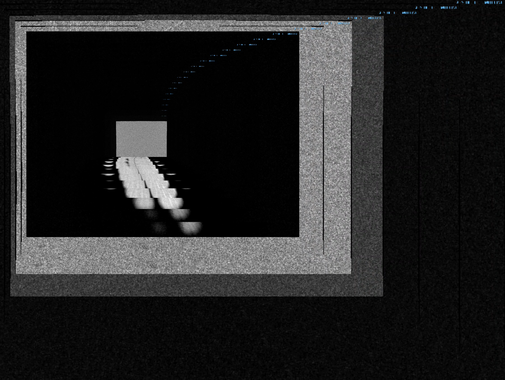
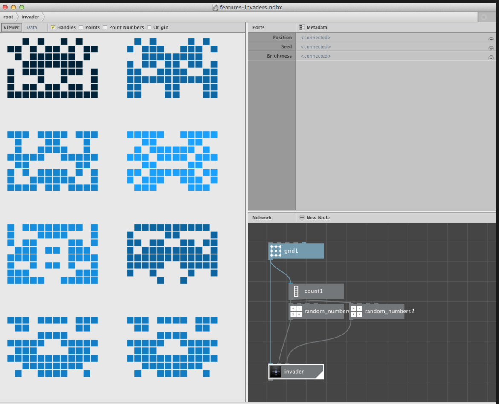
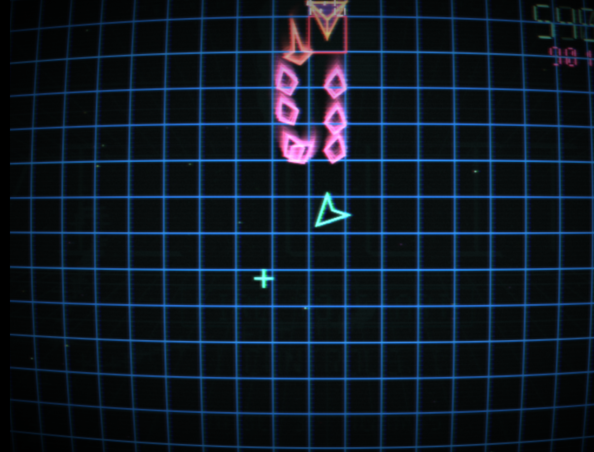

This week - Modules and Recursion
Looking at modularity in code and in art. Made a cool recursive tool, needs some development.
Thinking about the nodebox model.

Project to explore more. Created a system for iFrame recursion. Building on Jonathan's mention
of a nested google street view project, I was wondering if it was possible to point an iframe
at itself. Succeeded through using query parameters (different urls for each iframe, same content).
Result lets you recursively nest whatever you want!

Site
LOOK UP MORE. Nodebox, really interesting example of modular tool for coding experiments.
"Using our open-source tools we enable designers to automate boring production challenges,
visualize large sets of data and access the raw power of the computer without thinking in
ones and zeroes. Our tools integrate with traditional design applications and run on many platforms."

Game
Awesome game made for the js13k gamejam. Created with only 13k data.
 Coins Website
Coins Website
Very interesting interactive visualization (Three JS I believe) of coins throughout history.
Look at ways of transforming arrangement to emphasize qualities in data.
Back Home